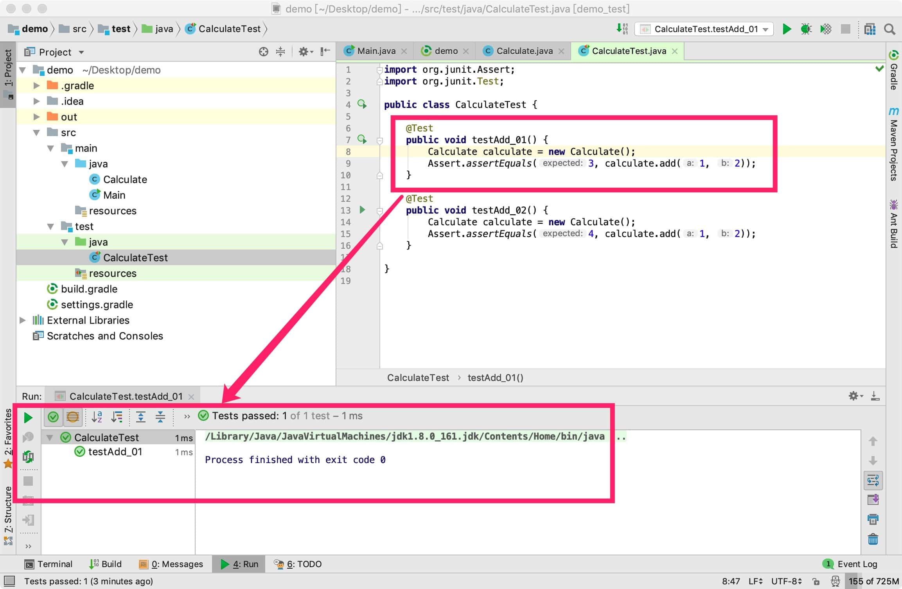
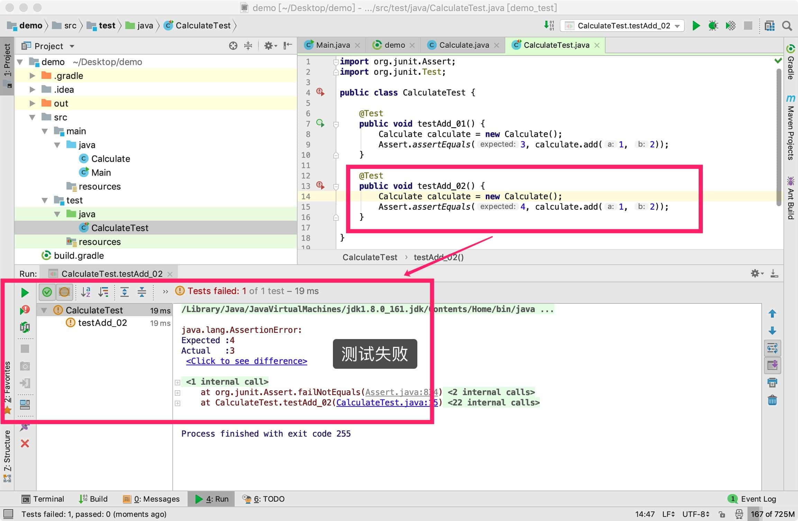
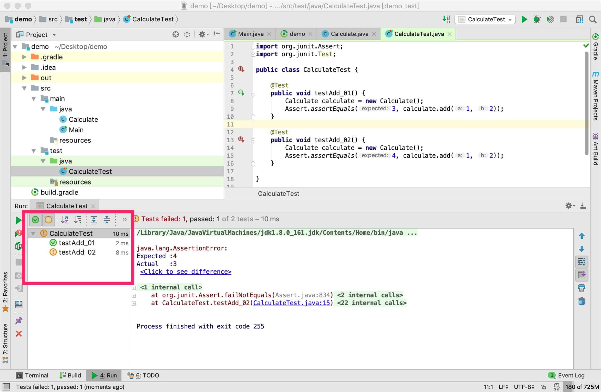

04. JUnit 的使用
JUnit 是一个测试框架，经常被拿来做单元测试。单元测试的粒度一般是方法。
我们看下如何编写单元测试。
在03. 使用Intellij IDEA创建Java项目中我们创建了一个机遇gradle的java项目，其中 build.gradle 的默认内容如下：
plugins {
id 'java'
}
group 'com.example'
version '1.0-SNAPSHOT'
sourceCompatibility = 1.8
repositories {
mavenCentral()
}
dependencies {
testCompile group: 'junit', name: 'junit', version: '4.12'
}
可以看到在 dependencies 中引入了junit依赖：
testCompile group: 'junit', name: 'junit', version: '4.12'
testCompile声明的依赖，只有在进行测试时才有效。又或者说，只有在src/test目录下的代码才会感知到 junit 依赖。
在 src/main/java中创建 Calculate 类，内容如下：
public class Calculate {
public int add(int a, int b) {
return a+b;
}
}
在src/test/java中创建 CalculateTest 类，内容如下：
import org.junit.Assert;
import org.junit.Test;
public class CalculateTest {
@Test
public void testAdd_01() {
Calculate calculate = new Calculate();
Assert.assertEquals(3, calculate.add(1, 2));
}
@Test
public void testAdd_02() {
Calculate calculate = new Calculate();
Assert.assertEquals(4, calculate.add(1, 2));
}
}
Assert 类中提供了一系列的断言方案，其中最常用的是assertEquals，第一个参数代表期望的值，第二个参数代表计算出的值。若两个值不相等，则抛出错误，认为测试失败。
在 testAdd_01 函数内部，鼠标右击，选择「Run testAdd_01」，会看到测试成功：

在 testAdd_02 函数内部，鼠标右击，选择「Run testAdd_02」，会看到测试失败：

在 testAdd_01 和 testAdd_02 函数外，鼠标右击，选择「Run CalculateTest」，会看到 testAdd_01 和 testAdd_02 都执行了：

留几个问题：
如果要执行
src/test目录下的所有测试代码，怎么做？如何查看测试覆盖率？
如果将 build.gradle 中的
testCompile改成compile，那么能在src/main目录写测试代码吗？Assert 类中还有哪些断言方法？